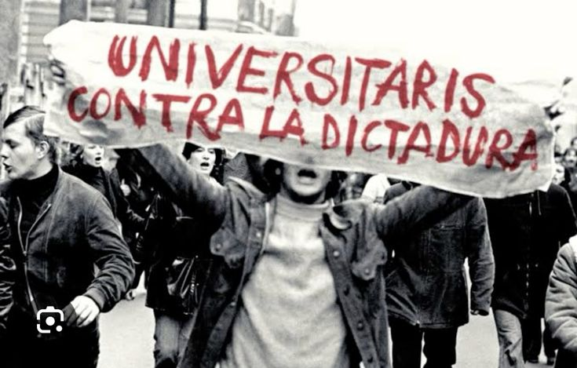
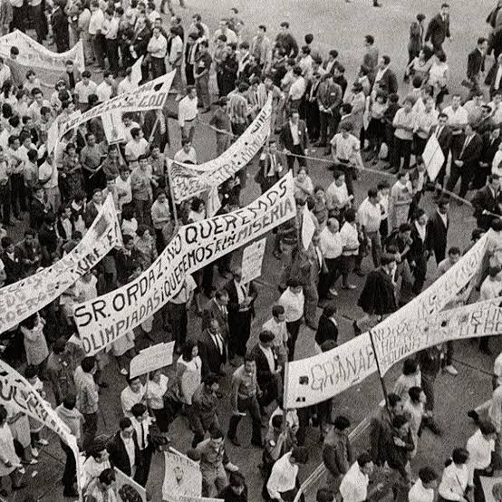

¿Qué sucedió?
El 2 de octubre de 1968, una manifestación del movimiento estudiantil mexicano terminó en una violenta represión en la Plaza de las Tres Culturas, en Tlatelolco, Ciudad de México. En el lugar se encontraban estudiantes y otras personas que se habían reunido para protestar contra la represión gubernamental y exigir libertades democráticas. Miembros del Ejército y de fuerzas de seguridad participaron en los acontecimientos, que incluyeron disparos, detenciones y persecuciones. La masacre se convirtió en uno de los episodios más importantes y dolorosos de la historia contemporánea de México.
Los hechos ocurrieron el 2 de octubre de 1968 en la Plaza de las Tres Culturas, en Tlatelolco, Ciudad de México, durante el gobierno del presidente Gustavo Díaz Ordaz, en el contexto del movimiento estudiantil de 1968 y poco antes de los Juegos Olímpicos de México

Lo que está documentado
* El movimiento estudiantil de 1968 organizó manifestaciones para exigir libertades políticas y denunciar la represión.
* El 2 de octubre, una concentración en Tlatelolco terminó en un episodio de violencia en el que participaron fuerzas militares y de seguridad.
* Hubo personas muertas, heridas y detenidas; numerosas personas fueron trasladadas a instalaciones policiales y militares.
* Documentos desclasificados de Estados Unidos y archivos mexicanos han permitido reconstruir parte de los acontecimientos y examinar las versiones oficiales de la época.
* La Comisión Nacional de los Derechos Humanos y el Archivo General de la Nación han señalado las dificultades para establecer una cifra definitiva de víctimas
Lo que aún no se sabe
No se ha establecido con certeza el número total de personas asesinadas durante la masacre. Las cifras históricas varían porque los registros fueron incompletos y existen testimonios y documentos contradictorios. También se siguen estudiando las circunstancias exactas en las que comenzaron los disparos, las responsabilidades individuales y el alcance de las decisiones tomadas por las autoridades. La falta de información completa y las dificultades de acceso a ciertos documentos han obstaculizado el esclarecimiento total de los hechos.
